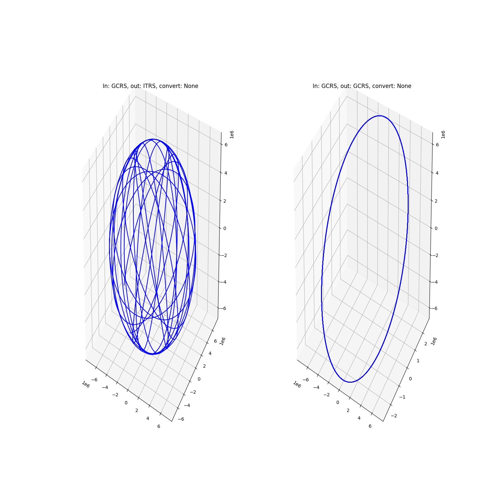

Note
Click here to download the full example code
Kepler propagator¶

Out:
a : 7.0000e+06 x : 7.0000e+06
e : 0.0000e+00 y : 0.0000e+00
i : 6.9000e+01 z : 0.0000e+00
omega: 0.0000e+00 vx: -0.0000e+00
Omega: 0.0000e+00 vy: 2.7043e+03
anom : 0.0000e+00 vz: 7.0448e+03
-------------------------- Performance analysis -------------------------
Name | Executions | Mean time | Total time
------------------------------+--------------+---------------+--------------
Propagator:convert_time | 2 | 3.55959e-04 s | 0.02 %
Kepler:propagate:in_frame | 2 | 5.16176e-05 s | 0.00 %
Kepler:propagate:mean_motion | 2 | 6.30112e-02 s | 4.04 %
frames:convert:GCRS->ITRS | 1 | 2.98315e+00 s | 95.65 %
Kepler:propagate:out_frame | 2 | 1.49159e+00 s | 95.66 %
Kepler:propagate | 2 | 1.55884e+00 s | 99.97 %
total | 1 | 3.11869e+00 s | 100.00 %
-------------------------------------------------------------------------
import numpy as np
import matplotlib.pyplot as plt
from mpl_toolkits.mplot3d import Axes3D
from astropy.time import Time
import pyorb
from sorts.profiling import Profiler
from sorts.propagator import Kepler
p = Profiler()
p.start('total')
prop = Kepler(profiler = p)
orb = pyorb.Orbit(M0 = pyorb.M_earth, direct_update=True, auto_update=True, degrees=True, a=7000e3, e=0, i=69, omega=0, Omega=0, anom=0)
print(orb)
t = np.linspace(0,3600*24.0,num=5000)
mjd0 = Time(53005, format='mjd', scale='utc')
#we can propagate and get ITRS out
prop.out_frame = 'ITRS'
states_itrs = prop.propagate(t, orb, epoch=mjd0)
#or we can set out_frame to GCRS which will cause no transformation to be applied after propagation
prop.out_frame = 'GCRS'
states_gcrs = prop.propagate(t, orb, epoch=mjd0)
p.stop('total')
print(p.fmt(normalize='total'))
fig = plt.figure(figsize=(15,15))
ax = fig.add_subplot(121, projection='3d')
ax.plot(states_itrs[0,:], states_itrs[1,:], states_itrs[2,:],"-b")
ax.set_title('In: GCRS, out: ITRS, convert: None')
ax = fig.add_subplot(122, projection='3d')
ax.plot(states_gcrs[0,:], states_gcrs[1,:], states_gcrs[2,:],"-b")
ax.set_title('In: GCRS, out: GCRS, convert: None')
plt.show()
Total running time of the script: ( 0 minutes 3.526 seconds)